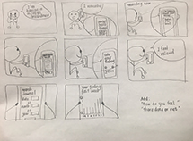

Iteration 1
The first story board shows a distressed user using the Mental Health Journal. The mental health journal uses Speech Recognition to allow the user to talk with the Device, and log the conversation into the database. The journal will also show statistics of the user's well-being based on the submissions/journal log made.
Iteration 2

The second story board additional features of the Mental Health Journal such as the "Choose the word to describe your feeling" in order for journal to better identify the state of the user. Also it will ask for the user's permission whether or not their journal logs can be monitored by psychologists.